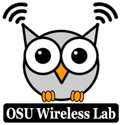
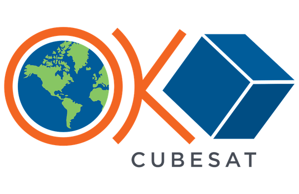

Leadership & recognition
Building programs that put new technology into the hands of students, faculty, and industry.
Leadership & innovation
Generative AI Literacy Initiative
Founding Director (2024–present). Texas A&M is part of OpenAI’s $50M NextGenAI consortium of 15 institutions. The initiative runs the Generative AI Consultancy Hub, the GAIRE research-for-education grants, and the GenAI Foundations Workshop series.
Texas Wireless
Director (2023–present). Research on wireless communications and sensing, in collaboration with partners including NYU (Prof. Theodore S. Rappaport).

OSU Wireless Lab
Founder and Director (2016–2022) of the Oklahoma State University Wireless Lab: research on wireless communications and sensing.

OKSat
Founding Director (2018–2022) of Oklahoma’s first CubeSat program, at Oklahoma State University.
Patents & startups
2 issued U.S. patents and 3 published applications. Co-founder of Waylolo (NSF I-Corps award) and Aura Prism; founder of GrantPanel.AI.
Honors & recognition
- U.S. Department of Energy Early Career Research Program Award: one of 56 university faculty selected nationwide in 2022 (under 1% acceptance), and the only DOE Early Career awardee in the Texas A&M College of Engineering
- Charlotte and Walter Buchanan Faculty Fellow, ETID, Texas A&M University
- ETID Faculty Teaching, Research and Service Award, Texas A&M University
- PSO/Albrecht Naeter Endowed Professor of ECE, Oklahoma State University
- Jack H. Graham Endowed Fellow of Engineering, Oklahoma State University
- Senior Member, IEEE
- Best Paper Award, 25th Asia-Pacific Conference on Communications (APCC)
- Best Paper Award, International Telecommunications Conference (ITELCON)
- President’s Cup, First Place Award, Oklahoma State University
- Qualstar Hall of Fame Award (eight times), Qualcomm
- Graduated No. 1 in the Department of Electrical and Electronics Engineering, Eskisehir Osmangazi University
In media news
Internal university news is not listed here.
- CXOTech Magazine: “Generative AI Literacy: The Core Skill That Will Define Tech Leadership” (authored article)
- Marketing Brew: “On campuses, GenAI companies brand themselves as academic friends, not foes” (quoted)
- Texas A&M joins OpenAI’s NextGenAI consortium, covered by OpenAI, Forbes, Inside Higher Ed, HPCwire, Investing.com, IBL News, AI Magazine (UK), and ActuIA (France)
- Generative AI Literacy Initiative, featured and quoted in EurekAlert! (AAAS), Semiconductor Digest, and The AI Insider